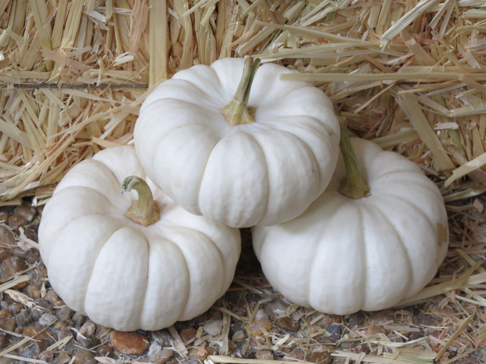
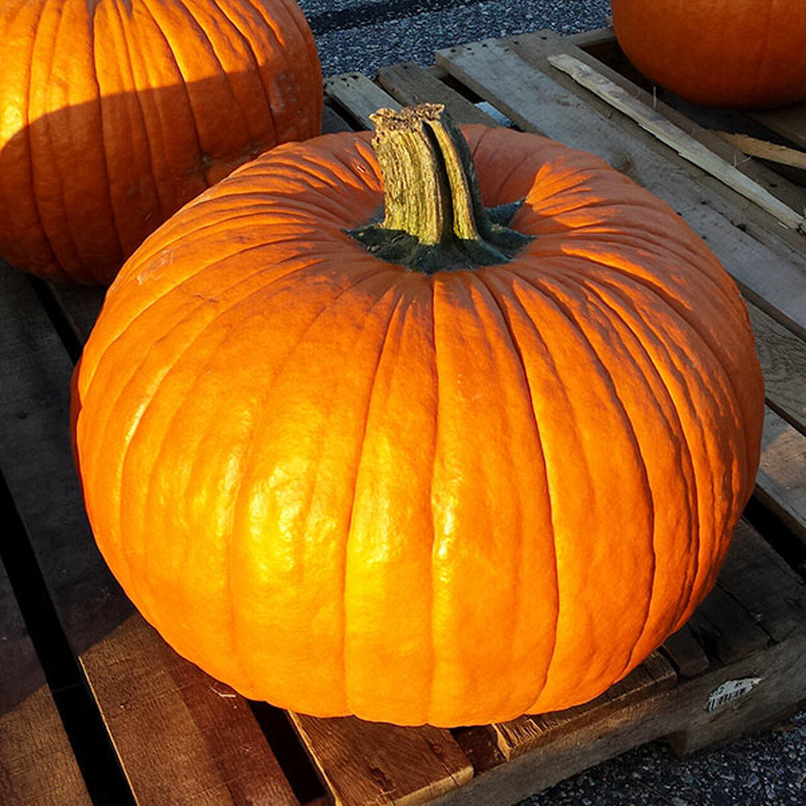
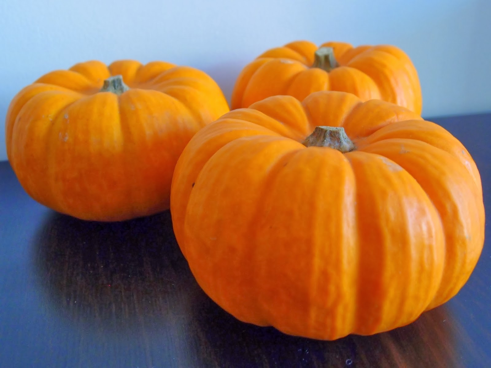
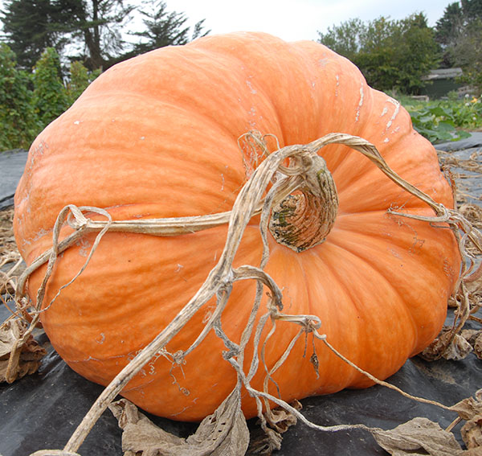
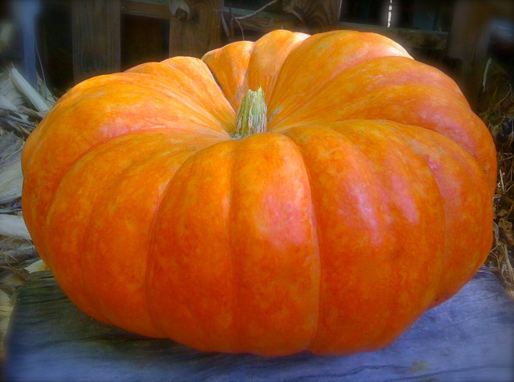
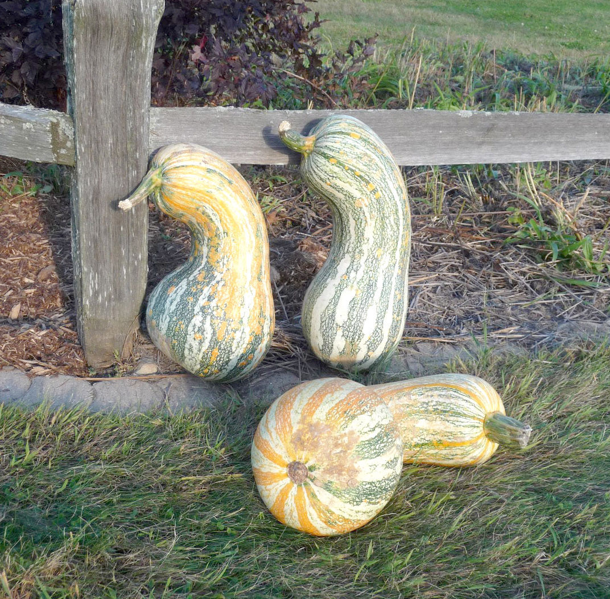
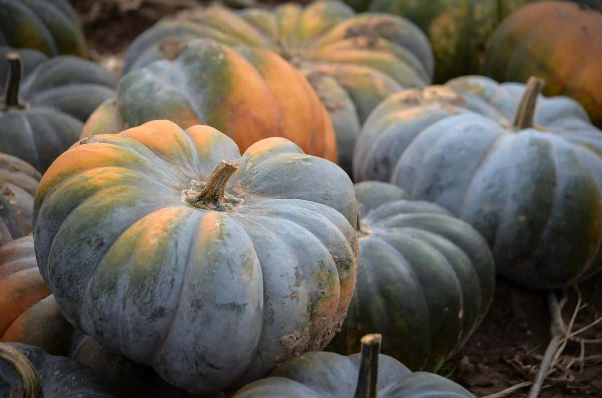
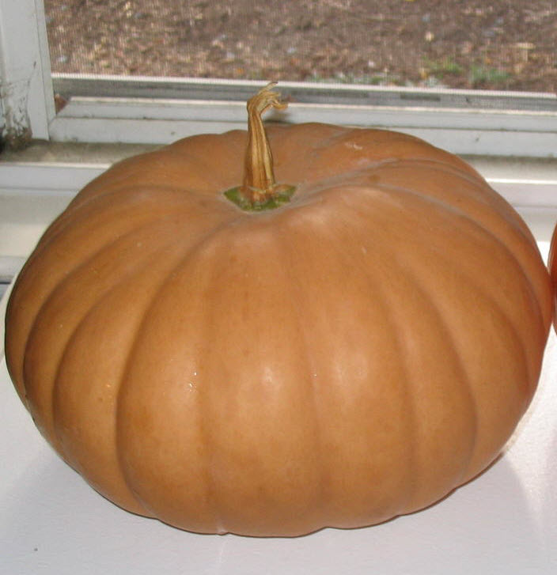
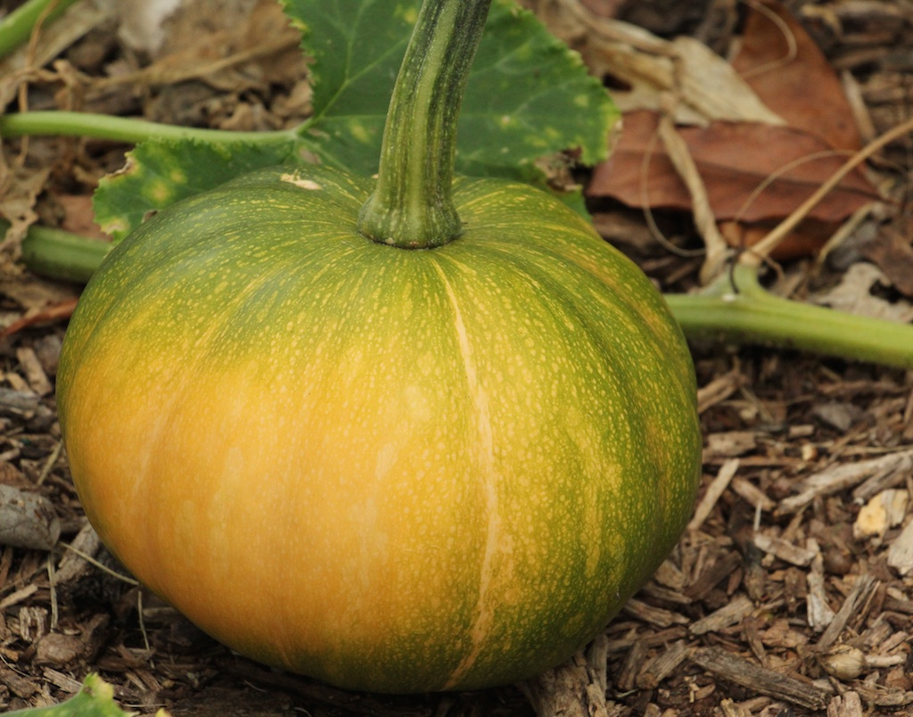

Pumpkins are a type of winter squash that belong to the genus Cucurbita. They are round and smooth, have slightly ribbed skin, and generally are a deep orange or yellow color (though they can also come in red, green, blue, and even white!). The term "pumpkin" usually refers to cultivars of Cucurbita pepo, however some kinds of C. maxima, C. argyrosperma, and C. moschata are also referred to as "pumpkin." There are literally hundreds of varieties of these fruits (and yes, a pumpkin is in fact a fruit!), so I will provide a general overview of the different groups of pumpkins and provide a few examples for each.
| Name | Common Colors | Size Range |
|---|---|---|
| C. pepo | Orange, green, yellow | Small to medium |
| C. maxima | Orange, blue, blue-green | Small to large |
| C. argyrosperma | Orange, blue, red, multicolored | Small to medium |
| C. moschata | Yellow, tan | Medium |
Pumpkins of the pepo species are generally thought of as "true" pumpkins. They are commonly round and orange. Other cultivars of the pepo species include acorn squash, zucchini, crookneck squash, and scalloped squash. Pepo pumpkins are mainly used for carving, pie making, and cooking. Examples include the Baby Boo, Connecticut Field, and Munchkin varieties, as pictured below.
  
Maxima pumpkins are known for their impressive size and weight, hence the name. These are the kinds of pumpkins farmers will grow when trying to win a contest. Other cultivars of the maxima species include banana squash, turban squash, and various winter squashes. Maxima pumpkins are most commonly used for carving and winning contests. Two examples are the Atlantic Giant and Cinderella varieties shown below.
 
Also known as C. mixta, pumpkins of this species come in many unique shapes and colors. Most commonly, they are bulbous with a narrow top. Other cultivars of this species include the Cushaw squash. Argyrosperma are most commonly used as excellent decorations thanks to the unique colors they come in, including:

The moschata species of pumpkin are known for their long, squat shapes. Other cultivars include butternut squash. Moschata pumpkins are often used for baking and other pumpkin products. Most products with a pumpkin flavor such as pie filling come from moschata pumpkins. Examples include the Jarrahdale, Long Island Cheese, and Seminole varieties, pictured below.
  
Here are useful links to sites with even more information on pumpkins. All of the information I used for this site came from these sources.